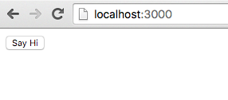
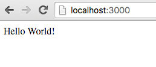

Necessary boilerplate
Before we get into coding let's start by cloning skeleton project which will abstract away all the boilerplate needed for initializing modern ES2016/React/Webpack project. Throughout the code examples we'll probably not strictly use all the ES2016 features as it may be confusing for newcomers.
The directory structure of the skeleton project is fairly straightforward:
src- Folder containing all the source fileshello-world- Our firstredux-elmcomponent, every component must expose two mandatory files:updaterandviewupdater.js- ElmishUpdater- we'll explain this laterview.js- React stateless Component
boilerplate.js- this file abstracts away all the boilerplate needed for using react/redux/redux-elm, it exports just single function, which we callrun. You don't need to understand the code for nowmain.js- main file which uses function exposed fromboilerplate.jsand calls it with specific root component, which in our case ishello-world
test- Folder containing all the tests related source fileshello-world- Unit tests forhello-worldComponent
index.html- index file needed for displaying HTMLpackage.json- dependencies description
You can try the hello-world by simply running:
npm install
npm start
npm start will start local HTTP server on port 3000 so you can simply open the browser with http://localhost:3000 and you should see following Hello World application:

which after clicking the button shows Hello World message
